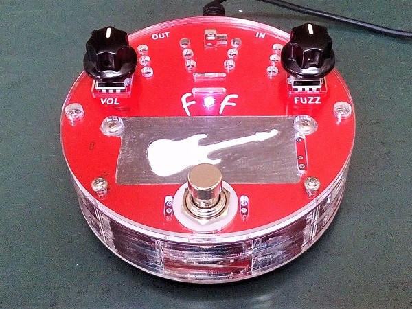
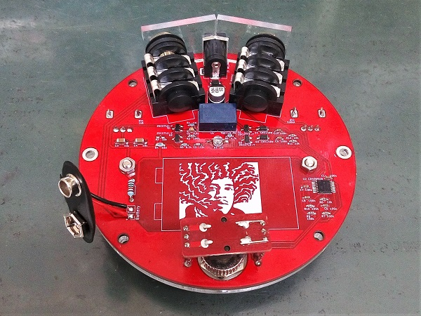
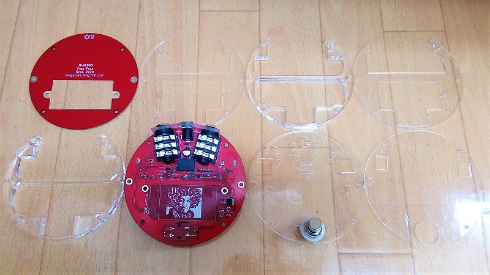
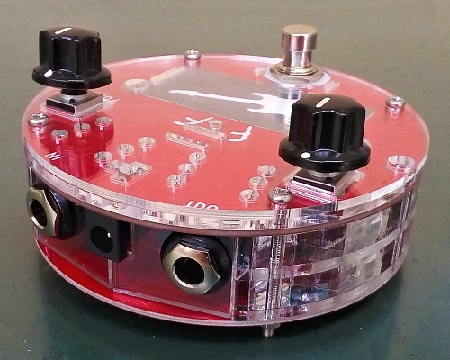
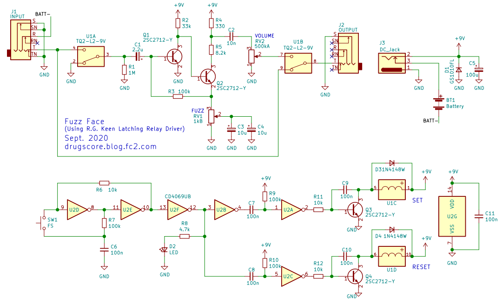
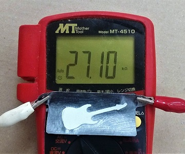

Fuzz Face 積層アクリル筐体
2020年11月20日 カテゴリー：自作エフェクター（アナログ）

以前基板筐体のDS-1を製作しましたが、今度は丸い筐体のエフェクターも作ってみたくなりました。そうなると思いつくのはやはりFuzz Faceです。
下写真のように基板とアクリル板計8枚から構成されています。※アクリル加工の注文等に関しては別記事へ

電池も入れられるようにしたので、あまり内部に余裕がありません。タクトスイッチ基板は表側の基板から吊り下げるようになっています。設計ミスでDCジャックの横に少し隙間があいてしまいました。
▽回路図（KiCadデータはGitHubへ）

ファズは入力インピーダンスが低いものが多く、バッファードバイパスにすると音が変わるため、トゥルーバイパスにするしかありません。ノイズを最小限にするため、リレーを最短距離で配線しています。回路はTrue Bypass Relay Moduleの時とほぼ同じですが、9Vのリレーを使用し、チャタリングが少ないスイッチ用に一部抵抗値を変更しています。
トランジスタは、一般的な2SC1815のチップ版ということで、なんとなく2SC2712を選びました。バイアス調整としてはコレクタに繋がる抵抗（R2、R5）をトリマーにすることがあるようですが、Fuzzface概論というページを参考にR2を可変にすることにしました。そこで登場するのが、紙を鉛筆で黒く塗りつぶした抵抗器です。R2に並列に取付できるようになっています。少し取付部の距離が長すぎましたが、頑張って塗りつぶせば10kΩ程度まで値を下げられると思います。

実際に抵抗値を調整してもあまり音に変化がない感じだったので、どこかにミスがあるかもしれません。やはりファズは難しいですね。最終的にR2は100kΩ、紙の抵抗器も100kΩ程度にしています。
紙と鉛筆の抵抗器は、昔コンデンサの自作をした際にアイデアだけがありました。数年の時を経て実現できてよかったです。経年変化がどうなのかはわかりませんが、他のエフェクターで使ってみるのもよいかもしれません。